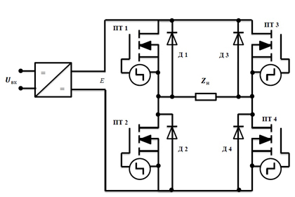
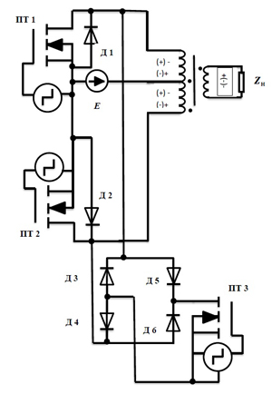
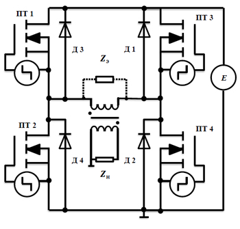
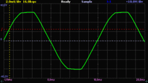
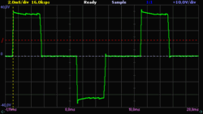
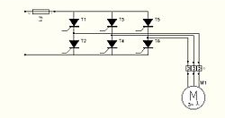

Инвертор: назначение, устройство, принцип работы и выбор
Что такое инвертор
Инвертор — это силовое электронное устройство, которое преобразует постоянный ток (DC) в переменный (AC), изменяя при этом величину напряжения и/или частоты под нужды потребителей. Обычно он представляет собой генератор периодического напряжения, по форме приближённого к синусоиде, либо дискретного сигнала.
Инверторы нашли применение в самых разных электрических системах — и в быту, и на производстве. Без них не обходится бесперебойное электроснабжение и системы, работающие на возобновляемых источниках энергии. Именно эти устройства открывают возможность широко использовать постоянный ток.
По сути, инвертор — это связующее звено между двумя элементами электроцепи:
источником питания постоянного тока — им может выступать генератор, аккумулятор, солнечная панель или ветрогенератор;
потребителем переменного тока — любой нагрузкой, которой нужно напряжение 220/230 В.
Инвертор может применяться как отдельное самостоятельное устройство (например, в автомобильных силовых агрегатах с электроприводом) или входить в состав источников и систем бесперебойного питания аппаратуры электрической энергией переменного тока — скажем, в ИБП или инверторном стабилизаторе напряжения.
Свойства инверторов
Инверторы напряжения позволяют устранить или, по крайней мере, ослабить зависимость работы информационных систем от качества сетей переменного тока. Например, в персональных компьютерах при внезапном отказе сети с помощью резервной аккумуляторной батареи и инвертора можно обеспечить работу компьютеров для корректного завершения решаемых задач. В более сложных ответственных системах инверторные устройства могут работать в длительном контролируемом режиме параллельно с сетью или независимо от неё.
Кроме «самостоятельных» приложений, где инвертор выступает в качестве источника питания потребителей переменного тока, широкое развитие получили технологии преобразования энергии, где инвертор является промежуточным звеном в цепочке преобразователей. Принципиальной особенностью инверторов напряжения для таких приложений является высокая частота преобразования (десятки–сотни килогерц). Для эффективного преобразования энергии на высокой частоте требуется более совершенная элементная база: полупроводниковые ключи, магнитные материалы, специализированные контроллеры.
Как и любое другое силовое устройство, инвертор должен иметь высокий КПД, обладать высокой надёжностью и иметь приемлемые массо-габаритные характеристики. Кроме того, он должен иметь допустимый уровень высших гармонических составляющих в кривой выходного напряжения (допустимое значение коэффициентов гармоник) и не создавать при работе недопустимый для других потребителей уровень пульсации на зажимах источника энергии.
Из чего состоит инвертор
Устройство инвертора зависит от его типа и назначения, но у большинства современных моделей можно выделить несколько основных узлов:
силовая часть — преобразует энергию постоянного тока в переменный сигнал;
электронный контроллер — управляет работой устройства и следит за параметрами напряжения;
полупроводниковые ключи — быстро переключают ток и участвуют в формировании выходного сигнала;
фильтры — сглаживают форму напряжения и снижают уровень помех;
система охлаждения — отводит тепло от силовых компонентов;
защитные цепи — отключают устройство при перегрузке, коротком замыкании, перегреве или недопустимом входном напряжении.
В некоторых схемах присутствует и трансформатор. Он может обеспечивать гальваническую развязку, менять уровень напряжения и добавлять безопасности.
Как работает инвертор
Работа инвертора напряжения основана на переключении источника постоянного напряжения с целью периодического изменения полярности напряжения на зажимах нагрузки. Частота переключения задаётся сигналами управления, формируемыми управляющей схемой (контроллером). Контроллер также может решать дополнительные задачи:
регулирование напряжения;
синхронизация частоты переключения ключей;
защита от перегрузок и др.
Если упростить, процесс выглядит так:
источник постоянного тока → силовая часть инвертора → управление полупроводниковыми ключами → формирование импульсного сигнала → фильтрация и сглаживание → переменное напряжение на выходе → подключённое оборудование.
Сначала энергия приходит от аккумулятора, солнечной панели или другого источника постоянного тока. Затем контроллер управляет силовыми ключами, которые формируют импульсный сигнал. После фильтров напряжение приобретает форму, нужную для питания нагрузки. В качественных инверторах на выходе получается стабильное переменное напряжение с чистой синусоидой — оно подходит для чувствительной бытовой, коммерческой и промышленной техники.
Методы технической реализации и особенности работы
Ключи инвертора должны быть управляемыми (включаются и выключаются по сигналу управления). Для обеспечения двухсторонней проводимости тока их, как правило, шунтируют обратными диодами. Исключение составляют полевые транзисторы, в которых такой диод является внутренним элементом их полупроводниковой структуры.
Регулирование выходного напряжения инверторов достигается изменением площади импульса полуволны. Наиболее простое регулирование достигается регулированием длительности импульса полуволны. Такой способ является простейшим вариантом метода широтно-импульсной модуляции (ШИМ) сигналов.
Нарушение симметрии полуволн выходного напряжения порождает побочные продукты преобразования с частотой ниже основной, включая возможность появления постоянной составляющей напряжения, недопустимой для цепей, содержащих трансформаторы.
Для получения управляемых режимов работы инвертора ключи инвертора и алгоритм управления ключами должны обеспечить последовательную смену структур силовой цепи, называемых прямой, короткозамкнутой и инверсной.
Мгновенная мощность потребителя пульсирует с удвоенной частотой. Первичный источник питания должен допускать работу с пульсирующими и даже изменяющими знак токами потребления. Переменные составляющие первичного тока определяют уровень помех на зажимах источника питания.
Что умеет инвертор
Главная задача инвертора — сформировать на выходе переменное напряжение с нужными параметрами: заданным уровнем, частотой и формой сигнала. Это позволяет аккумуляторным батареям, солнечным панелям и прочим источникам постоянного напряжения запитывать оборудование, рассчитанное на стандартную сеть 220/230 В с частотой 50 Гц.
В зависимости от модели на выходе может быть прямоугольная волна, модифицированная синусоида или чистая синусоида. Для чувствительной техники — газовых котлов, насосов, серверов, медицинского оборудования, измерительных приборов и современной электроники — как правило, берут инверторы с чистой синусоидой. Такая форма напряжения ближе всего к параметрам централизованной электросети и снижает риск того, что оборудование начнёт работать нестабильно.
В зависимости от типа инвертор может решать следующие задачи:
менять ток и повышать напряжение до нужного значения для бытовых или офисных электроприборов (например, с 12 В постоянного до 220 В переменного с частотой 50 Гц);
обеспечивать качественное электропитание нагрузки напряжением нужной величины и формы. К примеру, стабилизатор с двойным преобразованием энергии (или on-line ИБП) выполняет преобразование с помощью внутреннего выпрямителя и инвертора: сначала нестабильный переменный вольтаж становится постоянным и теряет свои негативные характеристики, а затем снова переводится в переменный — но уже с требуемыми для потребителей параметрами. За счёт этого зависимость качества входного тока от его величины на выходе снижается или исчезает совсем;
обеспечивать непрерывное и резервное электроснабжение потребителей от источника питания, который не умеет вырабатывать переменное напряжение. Когда в сети происходит аварийное отключение, инвертор — например, внутри источника бесперебойного питания — мгновенно начинает снабжать оборудование от аккумуляторных батарей, преобразуя постоянный ток в переменный.
Виды инверторов
Существует несколько типов инверторов как отдельных устройств. Внешне они похожи, а вот входные и выходные характеристики, вид нагрузки и источник питания, от которого они работают, отличаются. Разберём основные виды, которые чаще всего применяются в бытовой сфере.
По форме выходного напряжения
С прямоугольной волной (Square Wave Inverter). На выходе получается сигнал прямоугольной формы. В быту такие почти не используют из-за гармонических искажений. Они недопустимы для питания многих электрочувствительных приборов (например, аудиотехники, электроники отопительного оборудования, компьютерных систем и др.) — это снижает производительность и срок службы, а также провоцирует неисправности. Подойдут разве что для ламп накаливания и обогревателей.
С модифицированной волной (Modified Sine Wave Inverter). На выходе создаётся напряжение, форма которого близка к синусоидальной. Гармонические искажения здесь ниже, чем у первого типа, но проблемы с производительностью подключённого оборудования всё равно возможны. Поэтому такие инверторы подходят для обычной бытовой техники, которой не важна чистая синусоида, — например, некоторых моделей холодильников, электроинструментов и осветительных приборов.
С чистой синусоидой (Sine Wave Inverter). На выходе таких приборов напряжение всегда имеет стабильную и чистую синусоидальную волну. Уровень гармонических искажений здесь минимален. Поэтому их можно использовать для любой техники, даже с весьма чувствительной электроникой — например, измерительной аппаратуры, медицинской техники и др.
По виду источника питания
Для автомобилей (сюда же можно отнести и другие виды транспорта — железнодорожный, воздушный, водный или специализированный). Работая от бортовой сети постоянного тока (12/24 В), приборы позволяют получать переменный ток 220 В для питания бытовой техники, которой пользуются, например, в путешествиях.
Для электросети. Чтобы вырабатывать переменный ток, они подключаются к центральной электросети через отдельный прибор — выпрямитель. Также выпрямитель может быть встроенным блоком, тогда устройство совмещает функцию инвертора и классического ИБП и обеспечивает потребителей резервным электропитанием на нужное время в период отключения электричества. Некоторые модели способны одновременно питать потребителей постоянного и переменного тока.
Для альтернативных источников энергии. Подключаются к ветрогенераторам или солнечным панелям, чтобы вырабатывать переменный ток, например, в период аварийных отключений. Могут совмещать несколько режимов работы, в том числе запитываться от электросети для зарядки аккумуляторных батарей.
Чем инвертор отличается от ИБП, стабилизатора и преобразователя напряжения
Инвертор часто путают с ИБП, стабилизатором напряжения и преобразователем. Эти устройства действительно связаны с электропитанием, но решают разные задачи.
Инвертор — преобразует постоянное напряжение в переменное. Когда нужно: питать нагрузку от аккумуляторов, солнечных панелей или другого источника постоянного тока.
ИБП — обеспечивает резервное питание при отключении сети. Когда нужно: чтобы оборудование продолжало работать без перерыва или с минимальной паузой.
Стабилизатор напряжения — поддерживает выходное напряжение в заданных пределах. Когда нужно: если в сети есть скачки, просадки или нестабильное напряжение.
Преобразователь напряжения — меняет параметры электрической энергии. Это общее название устройств, к которым относится и инвертор.
Инвертор может быть частью источника бесперебойного питания, но сам по себе не всегда является полноценным ИБП. В ИБП, кроме инвертора, обычно есть зарядное устройство, аккумуляторная батарея или разъём для её подключения, система управления, защита и автоматическое переключение режимов. Стабилизатор напряжения решает другую задачу: он не питает нагрузку от аккумуляторов, а корректирует параметры уже имеющейся электросети. Если нужно защитить оборудование от перепадов напряжения — берут стабилизатор. Если нужно получить питание от аккумуляторов или солнечных панелей — инвертор или ИБП. Преобразователь напряжения — понятие более широкое: он может преобразовывать постоянное напряжение в постоянное, переменное в постоянное, переменное в переменное или постоянное в переменное. Инвертор — один из видов преобразователей, который выполняет преобразование DC → AC.
Где инвертор не подойдёт
Инвертор подходит не для всех задач. Перед подключением нужно учитывать тип нагрузки, мощность оборудования, пусковые токи и форму выходного напряжения.
Инверторы с модифицированной синусоидой не рекомендуется использовать для чувствительной техники, которой требуется качественное питание. К такой нагрузке относятся:
современные газовые котлы с электронной системой управления;
циркуляционные и скважинные насосы;
серверное и телекоммуникационное оборудование;
медицинская техника;
лабораторные и измерительные приборы;
профессиональная аудио- и видеотехника;
оборудование с электродвигателями, чувствительными к качеству электропитания.
Для таких потребителей лучше выбирать инверторы с чистой синусоидой. Они формируют напряжение, максимально близкое к параметрам централизованной электросети, и снижают риск перегрева, ошибок и нестабильной работы подключённой техники.
Также нельзя подключать к инвертору нагрузку, мощность которой превышает возможности устройства. При перегрузке инвертор может отключиться, перейти в защитный режим или выйти из строя. Для оборудования с электродвигателями нужно учитывать пусковые токи и выбирать модель с запасом мощности.
Как выбрать инвертор
При выборе инвертора стоит учитывать не только мощность, но и тип подключаемого оборудования, входное напряжение, форму выходного сигнала и условия эксплуатации. Основные параметры выбора:
мощность — должна быть выше суммарной мощности подключаемой нагрузки;
запас по мощности — обычно рекомендуется закладывать 20–30 %, а для оборудования с высокими пусковыми токами может потребоваться больше;
форма выходного напряжения — для чувствительной техники лучше выбирать чистую синусоиду;
входное напряжение — должно соответствовать аккумуляторной системе или другому источнику постоянного тока: 12, 24, 48, 60, 220 В или иному номиналу;
перегрузочная способность — важна для насосов, компрессоров, холодильников и другой техники с электродвигателями;
КПД — чем он выше, тем меньше энергии теряется при преобразовании;
защита — желательно наличие защиты от перегрузки, короткого замыкания, перегрева, глубокого разряда АКБ, повышенного и пониженного входного напряжения;
исполнение корпуса — настольное, настенное, стоечное, модульное или врубное, в зависимости от места установки.
Для бытовой техники, котлов, насосов, серверов и другого ответственного оборудования лучше выбирать инвертор с чистой синусоидой и достаточным запасом мощности. Для сложных систем резервного или автономного электроснабжения подбор оборудования лучше выполнять по проекту или с консультацией специалиста.
Типовые схемы инверторов напряжения
Существует большое число вариантов построения схем инверторов. Исторически первыми были механические инверторы, которые в эпоху развития полупроводниковых технологий заменили более технологичные инверторы на базе полупроводниковых элементов, и цифровые инверторы напряжения. Но всё же, как правило, выделяют три основные схемы инверторов напряжения:
Мостовой ИН без трансформатора. Область применения: устройства бесперебойного питания мощностью более 500 ВА, установки с высоким значением напряжения (220–360 В).

С нулевым выводом трансформатора. Область применения: устройства бесперебойного питания компьютеров мощностью (250–500 ВА), при низком значении напряжения (12–24 В), преобразователи напряжения для подвижных систем радиосвязи.

Мостовая схема с трансформатором. Область применения: устройства бесперебойного питания ответственных потребителей с широким диапазоном мощностей: единицы ВА — десятки кВА.

Принцип построения инверторов
Инверторы с прямоугольной формой выходного напряжения
Преобразование постоянного напряжения первичного источника в переменное достигается с помощью группы ключей, периодически коммутируемых таким образом, чтобы получить знакопеременное напряжение на зажимах нагрузки и обеспечить контролируемый режим циркуляции в цепи реактивной энергии. В таких режимах гарантируется пропорциональная зависимость выходного напряжения от относительной длительности импульсов управления ключами или фазового сдвига сигналов управления противофазных групп ключей. В случае неконтролируемых режимов циркуляции реактивной энергии реакция потребителя с реактивными составляющими нагрузки влияет на форму напряжения и его выходную величину.
Инверторы напряжения со ступенчатой формой кривой выходного напряжения
Принцип построения такого инвертора заключается в том, что при помощи предварительного высокочастотного преобразования формируются однополярные ступенчатые кривые напряжения, приближающиеся по форме к однополярной синусоидальной кривой с периодом, равным половине периода изменения выходного напряжения инвертора. Затем с помощью, как правило, мостового инвертора однополярные ступенчатые кривые напряжения преобразуются в разнополярную кривую выходного напряжения инвертора.
Инверторы с синусоидальной формой выходного напряжения
Принцип построения такого инвертора заключается в том, что при помощи предварительного высокочастотного преобразования получают напряжение постоянного тока, значение которого близко к амплитудному значению синусоидального выходного напряжения инвертора. Затем это напряжение постоянного тока с помощью, как правило, мостового инвертора преобразуется в переменное напряжение по форме, близкое к синусоидальному, за счёт применения соответствующих принципов управления транзисторами этого мостового инвертора (принципы так называемой многократной широтно-импульсной модуляции). Идея многократной ШИМ заключается в том, что на интервале каждого полупериода выходного напряжения инвертора соответствующая пара транзисторов мостового инвертора коммутируется на высокой частоте (многократно) при широтно-импульсном управлении. Причём длительность этих высокочастотных импульсов коммутации изменяется по синусоидальному закону. Затем с помощью высокочастотного фильтра нижних частот выделяется синусоидальная составляющая выходного напряжения инвертора.
Инверторы напряжения с самовозбуждением
Инверторы с самовозбуждением (автогенераторы) относятся к числу простейших устройств преобразования энергии постоянного тока. Относительная простота технических решений при достаточно высокой энергетической эффективности привела к их широкому применению в маломощных источниках питания в системах промышленной автоматики и генерировании сигналов прямоугольной формы, особенно в тех приложениях, где отсутствует необходимость в управлении процессом передачи энергии. В этих инверторах используется положительная обратная связь, обеспечивающая их работу в режиме устойчивых автоколебаний, а в классических схемах переключение транзисторов может осуществляться за счёт насыщения материала магнитопровода трансформатора. В связи со способом переключения транзисторов, с помощью насыщения материала магнитопровода трансформатора, выделяют недостаток схем инверторов, а именно низкий КПД, что объясняется большими потерями в транзисторах. Поэтому такие инверторы применяются при частотах не более 10 кГц и выходной мощности до 10 Вт. При существенных перегрузках и коротких замыканиях в нагрузке в любом из инверторов с самовозбуждением происходит срыв автоколебаний (все транзисторы переходят в закрытое состояние).


Однофазные инверторы
Существуют несколько групп инверторов:
Первая группа более дорогих инверторов обеспечивает синусоидальное выходное напряжение.
Вторая группа обеспечивает выходное напряжение упрощённой формы, заменяющей синусоиду. Чаще всего используется сигнал в виде трапецеидального синуса.
Для значительной части бытовых приборов допустимо использовать напряжение с упрощённой формой сигнала, однако для техники, содержащей электродвигатели, трансформаторы, а также для телекоммуникационных, измерительных, лабораторных приборов, медицинской аппаратуры и профессиональной аудиотехники необходима чистая синусоида. Выбор инвертора производится исходя из пиковой мощности энергопотребления стандартного напряжения 220 В / 50 Гц.
Существуют три режима работы инвертора:
Режим длительной работы. Данный режим соответствует номинальной мощности инвертора.
Режим перегрузки. В данном режиме большинство моделей инверторов в течение нескольких десятков минут (до 30) могут отдавать мощность в 1,2–1,5 раза больше номинальной.
Режим пусковой. В данном режиме инвертор способен отдавать повышенную моментальную мощность в течение нескольких миллисекунд для обеспечения запуска электродвигателей и емкостных нагрузок.
В течение нескольких секунд большинство моделей инверторов могут отдавать мощность в 1,5–2 раза, превышающую номинальную. Сильная кратковременная перегрузка возникает, например, при включении холодильника.

Трёхфазные инверторы
Трёхфазные инверторы обычно используются для создания трёхфазного тока для электродвигателей, например, для питания трёхфазного асинхронного двигателя. При этом обмотки двигателя непосредственно подключаются к выходу инвертора.
Высокомощные трёхфазные инверторы применяются в тяговых преобразователях в электроприводе локомотивов, теплоходов, троллейбусов (например, АКСМ-321), трамваев, прокатных станов, буровых вышек, в индукторах (установки индукционного нагрева).
На рисунке приведена схема тиристорного тягового преобразователя по схеме «Ларионов-звезда». Теоретически возможна и другая разновидность схемы Ларионова «Ларионов-треугольник», но она имеет другие характеристики (эквивалентное внутреннее активное сопротивление, потери в меди и др.).